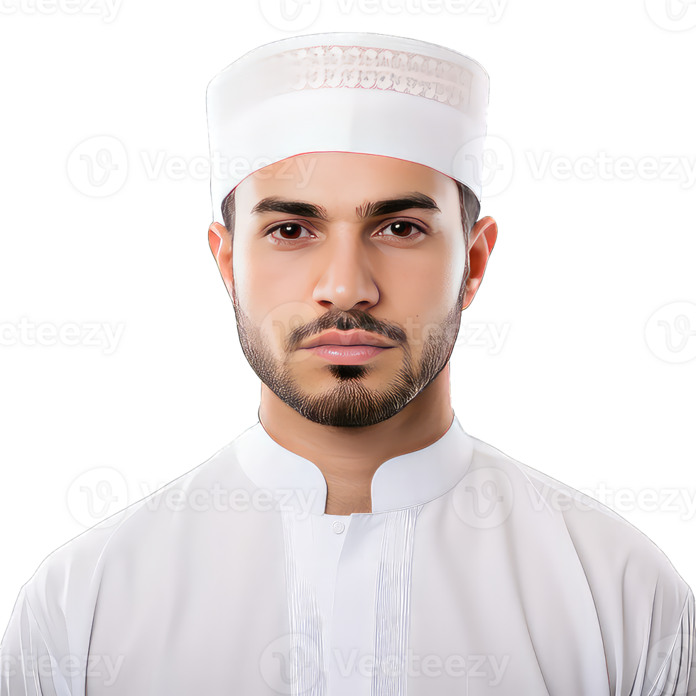

Ahmed had een klein winkeltje in Jemen, waar hij elke dag erg hard werkte om zijn gezin te onderhouden. Maar toen de oorlog uitbrak, werd alles wat hij had verwoest. Zijn huis, zijn winkel, zijn dromen, alles werd door de bommen weggevaagd. Zijn vrouw en kinderen konden ontsnappen en succesvol asiel aanvragen in Nederland, maar hij niet, hij moest terug naar de onveilige gebieden. Nu leeft hij in constante angst, op zoek naar voedsel en onderdak, terwijl de stad om hem heen afbrandt. Zijn grootste verlangen is om weer bij zijn familie te zijn in een plek waar ze veilig kunnen leven, namelijk Nederland. Maar deze droom lijkt mijlenver weg. Toch denkt hij dat Nederland de enige plek is waar hij ooit opnieuw in vrede kan beginnen, maar de reis daarheen voelt als een droom die hij nooit kan gaan realiseren.
Ahmet is één van de duizenden vluchtelingen die gescheiden zijn van hun familie en zich niet meer met hun familie kunnen verenigen om allerlei belachelijke redenen.
